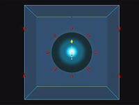
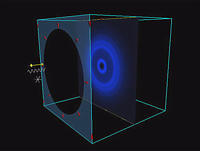

(Circular aperture)
Note: Click on the thumbnails to see the 640x480 resolution movies.
|  |
Fresnel diffraction from a circular aperture: change of the diameter of
the aperture. The wavelength and position of the observation screen are
held constant and the diameter of the aperture is varied. The initial and
final Fresnel numbers are 1.00 and 5.00, respectively.
Click here to see the 320x200 version. |

|
Fresnel diffraction from a circular aperture: change of position of
observation screen. The wavelength and slit width are held constant and
the position of the observation screen is varied. The initial
and final Fresnel numbers are 2.00 and 6.00, respectively.
Click here to see the 320x200 version. |
|  |
Fresnel diffraction from a circular aperture: change of the wavelength.
The slit width and position of the observation screen are held constant
and the wavelength is varied. The initial and final Fresnel numbers are
4.00 and 2.29, respectively.
Click here to see the 320x200 version. |

Created
by Srihari Angaluri and Kiril Vidimce
Send comments to comments@webtop.org